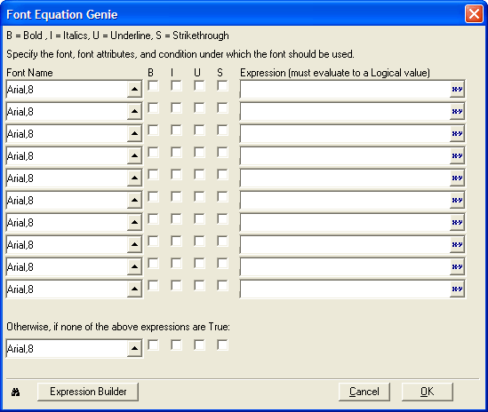
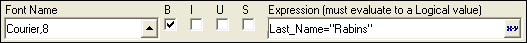

Font Equation Genie
The Font Equation Genie guides you through creating logical expressions for determining font face and size, as well as text decoration for a field. Each row represents one expression. You can use multiple rows to set several different Font Equations for the same field, which are evaluated in the same order which they appear in the Genie.

To use the Font Equation Genie :
Display the Setup tab of a field's Properties dialog.
Check the Font Equation check box.
Click
 to open the Font Equation Genie.
to open the Font Equation Genie.For each font format (each row):

A Font Equation that Changes the Font to 8pt Courier Bold if the Last Name Equals "Rabins"
Optionally, click
 to select a font and point size from the Select Font dialog box.
to select a font and point size from the Select Font dialog box.Optionally, check the B (bold), I (italic), U (underline), and S (strikethrough) check boxes to enable these font attributes.
Enter an expression that evaluates to .T. (TRUE) or .F. (FALSE). This expression tells Alpha Five when to turn the font format on and off. Optionally, click
to display the Expression Builder to help you build the necessary
expression.At the bottom of the Genie, you can set font properties for Alpha Five to use if none of the font equations evaluate to true.
Click the Expression Builder button if you need to create more than 10 font equations. This alternative produces an expression that cannot be edited in the Font Equation Genie.
See Also